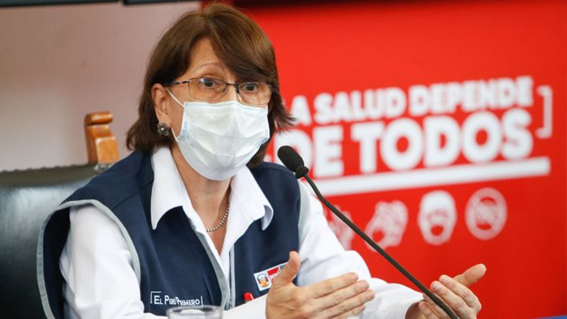
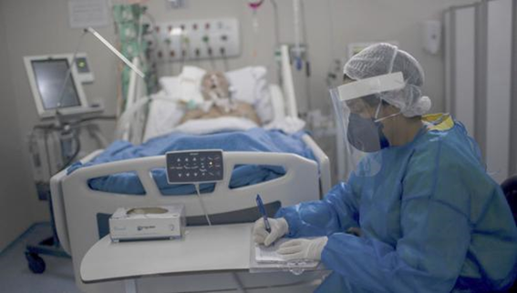
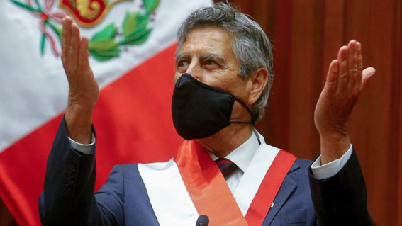

El primer caso de la pandemia de COVID-19 en Perú fue confirmado el 6 de marzo en la ciudad de Lima, cuando un hombre de 25 años que había viajado a Europa dio positivo. El inicio del brote epidémico en el país, llamado también «transmisión comunitaria», fue anunciada el 17 de marzo; mientras que el primer fallecimiento fue reportado dos días después. Con el pasar del tiempo el brote se expandió en todo el territorio nacional siendo Ucayali el último departamento en reportar su primer caso positivo el 12 de abril, en este mismo departamento en la provincia de Purús se confirmó el 7 de julio que indígenas sharanahuas se habían contagiado de COVID-19 durante su estadía en la frontera con Brasil, convirtiéndose en la última provincia a nivel nacional en declarar tener presencia de personas contagiadas. El aumento exponencial de contagios, ocurrido desde la tercera semana de abril, llegó a posicionar al Perú como el segundo país con más casos en América Latina y el quinto a nivel mundial. Para el 26 de agosto, Perú se posicionó como el país con el mayor índice de mortalidad per cápita y el noveno país en el mundo con mayor cantidad de muertes totales.
El 15 de marzo, el Gobierno del Perú decretó estado de emergencia y aislamiento social obligatorio a nivel nacional que regiría desde las 00:00 h del 16 de marzo por un período de 15 días. A este anuncio, el 18 de marzo se le incluyó el «toque de queda» nocturno y dominical. Estas medidas fueron recurrentemente extendidas hasta en cinco oportunidades, llegando hasta fines de junio. El 26 de junio, el gobierno amplió nuevamente el estado de emergencia hasta el 31 de julio, pero esta vez la cuarentena general fue cambiada por un «aislamiento social focalizado» y la flexibilización del toque de queda desde el 1 de julio; para menores de 14 y mayores de 65 años, y quienes presenten comorbilidades conforme lo determina la Autoridad Sanitaria Nacional, en todo el territorio nacional a excepción de siete departamentos. Esta última medida tuvo una primera extensión hasta el 31 de agosto, y una segunda hasta el 30 de septiembre; en las cuales ingresaron nuevos departamentos y provincias al aislamiento focalizado. Para octubre se volvió a extender el estado de emergencia, pero terminó la cuarentena en todo el país.
Coronavirus: Pilar Mazzetti confirmó que el Perú afronta una segunda ola del COVID-19
Nueva variante COVID-19: qué es una cepa, cómo ha llegado a Perú y qué síntomas produce
Médicos de UCI: “Los casos de COVID-19 aumentan verticalmente, nosotros ya tenemos lista de espera”
¿Qué dijo el presidente Sagasti acerca de un posible confinamiento?
